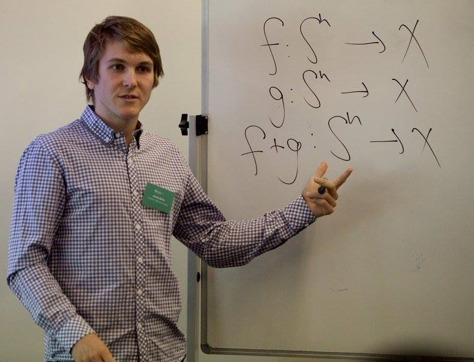

Currently, I research differential privacy in the Data Access and Confidentiality Methods Unit at the Australian Bureau of Statistics.
In 2017 I tutored two courses at the Australian National University (ANU):

James Bailie
The Australian Bureau of Statistics
45 Benjamin Way
Belconnen, ACT, Australia
Email: [FirstName] h [LastName] at gmail dot com